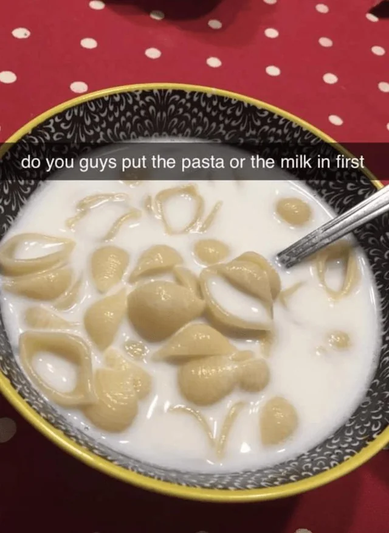

Pasta Milk Thing

As far as creamy pasta recipes, this is the best I have ever had. Add prawns and/or scallops to make an amazing seafood Alfredo.
Ingredients
- 1 tray of any pasta (homemade or store bought!)
- 3 cups of Devondale Full Cream Milk
- An empty bowl
- 1 copy of "The Subtle Art of Not Giving a F***" by Mark Manson
Steps
- Put milk into bowl (important first step)
- Boil pasta overnight
- Wake up next morning, put all pasta into the milk
- Serve and enjoy!
BONUS QUESTION: Why is there a need to read a whole book just so you can learn not to give a fuck? Write in no less than 6-10 sentences. (3 points)
Back